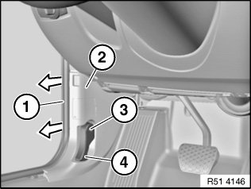
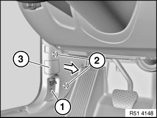
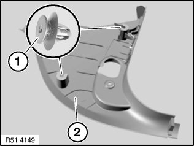

51 43 070 Removing and Installing/Replacing Side Trim Panel, Footwell, on A-pillar, Left
51 43 070 Removing and installing/replacing side trim panel, footwell, on A-pillar, left

Necessary preliminary tasks:
- Remove front entrance cover strip (inside)
- Remove trim panel for pedal assembly

Detach mucket (1) in area of side trim panel (2).
Release bolt (3).
Remove hood/bonnet release lever (4) from side trim panel (2).

Release screw (1).
Unclip side trim panel (3) in direction of arrow from retaining points (2).
If necessary, disconnect associated plug connection and remove side trim panel (3).

Installation:
If necessary, lever out clips (1) remaining in bore.
If necessary, replace faulty clips (1).
Position side trim panel (2) preinstalled with clips (1) on associated bores and clip into place.
Replacement:
Not E84:
Remove switch for unlocking tailgate.